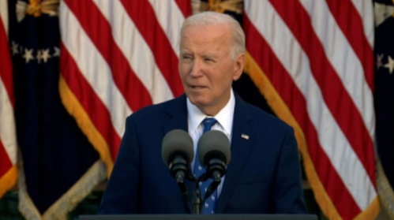

12月20日|来源:财联社
财联社12月20日讯(编辑卞纯)在美国当选总统特朗普誓言要大规模驱逐非法移民之际 ，最新数据显示，受移民激增推动，今年美国人口增速创23年来最快。
美国人口普查局周四发布的最新预估显示 ，2024年美国人口增长近1% ，至3.41亿 。这与2021年0.2%的 历史新低形成鲜明对比 ，当时新冠疫情限制了大量移民前往美国。 在330万新增人口中，有一小部分来自于人口自然增长 。数据显示 ，2024年美国出生人数比死亡人数多出 近51 .9万 ，高于2021年疫情期间14.6万的低点。
其余约280万新增人口来自美国境外，占比高达84% 。移民人数大增的部分原因是 ，美国人口普查局正在 采用一种新的统计方法，将更多因人道主义原因而入境的人也纳入统计。
新数字包括那些通过人道主义假释进入美国的人。人道主义假释是指美国政府基于紧急人道主义原因或重 大公共利益 ，给予原本不被允许进入美国或不符合常规移民条件的人临时进入美国的许可。
总部位于华盛顿的研究机构 “移民政策研究所”上周表示，从2021年到2024年 ，美国根据各种人道主义政策接纳了超过580万人。
数据还显示 ，2024年 ，美国南方人口增长了180万，增速最快 。德克萨斯州新增人口最多 ，为562941 人 ，其次是佛罗里达州 ，新增467347人 。哥伦比亚特区的人口增长率为2.2% ，为全国最快。
移民问题 ，尤其是无证移民问题，是今年美国大选的一个主要关注点。以当选总统特朗普为首的共和党人 指责拜登政府未能确保美国南部边境的安全。
特朗普此前多次表示 ，其上任后将驱逐数百万非法居住在美国的人 。他最近还重申 ，计划在法律允许的范围内最大限度动用军队 ，推动大规模驱逐非法移民的计划。
12月20日|来源:国际投行研究报告
特朗普计划限制 “ 出生公民权” ，正为法律斗争做准备。 据知情人士透露 ，特朗普过渡团队正起草限制在美国出生者自动取得公民权利的行政令的多个版本， 目前他的助手们在为一场范围更大的法律斗争做准备。
特朗普(Donald Trump)长期以来一直承诺要颁布行政令，对任何在美国出生者可自动获得公民身份的权 利进行限制，据知情人士透露 ，这位美国当选总统的过渡团队正起草该行政令的多个版本，目前他的助手 们在为一场范围更大的法律斗争做准备。
特朗普多年来一直抨击所谓的出生公民权，他在第一个任期内曾表示 ，计划颁布一项会彻底禁止此种做法 的行政令 。这样的命令从未被签署过，但在特朗普这次再度竞选总统期间 ，这个问题仍然是他的移民提案的一个焦点 。他已表示，他会在第二个任期的第一天就颁布一项行政令来解决这个问题。
在特朗普再过几周就要上任之际，他的过渡团队现在正考虑把这样一项命令的范围推进到何种程度，他们 知道这样的命令会立即在法庭上受到挑战 ，一位过渡团队官员和其他知情人士如此表示 。最终的命令料将 集中于改变与联邦机构签发的护照等用于验证公民身份的文件有关的要求。 此外，借助行政令或相关的机构规则制定程序 ，特朗普料将采取措施阻慑他的盟友们所说的 “生育旅行” ，即孕妇赴美生子，以便让在美国生下的子女获得公民身份 。据熟悉特朗普团队想法的人士透露 ，一个可能的选项是收紧与获得旅游签证的资格有关的标准 。旅游签证的有效期通常为10年，但每次在美停留的时间不能超过6个月。
特朗普过渡团队的发言人Karoline Leavitt表示 ，这位当选总统 “将利用一切权力杠杆来兑现他的承诺 ，一劳永逸地修复我们破碎的移民制度”。
特朗普还表示，他将采取行动终止长期载入宪法第十四修正案的出生公民权 ，并剥夺在美国出生但父母无 证居住的人的权利。
但他说，他愿意与民主党合作通过立法，确保 “梦想者”--儿时进入美国的无证移民一能够留在美国。
特朗普就大规模驱逐计划发表了评论 ，这是他总统竞选期间的一项重要承诺 ，也是他自11月赢得大选以来最广泛的评论。他说 ，该计划将从犯下罪行的无证移民开始 ，然后逐步扩展到“非罪犯” 。他没有详细说 明将包括哪些罪行。
“我认为你必须这么做 ，”特朗普在谈到他的驱逐行动时说道:“这是一件非常艰难的事情 。但你必须有规则、法规和法律 。他们是非法入境的。你知道 ，受到非常不公平对待的人是那些排队10年才进入美国的人 。” “我们必须把罪犯赶出我们的国家 ，”特朗普说 ，后来又补充道:“但我们先从罪犯开始 ，我们必须这样做。 然后我们再从其他人开始 ，看看进展如何 。”
当被问到“其他人是谁”时 ，特朗普回答道:“其他人是罪犯以外的其他人 。”
拜登总统任职期间 ，非法移民进入美国的数量大幅增加 ，不过随着近几个月来行政措施的出台 ，这一数字 有所下降。
加强美墨边境的限制是特朗普竞选期间的重中之重-就像他在2016年首次竞选时一样 。特朗普及其盟友经 常强调无证移民的暴力行为 ，以支持他们的主张 。(美国国家司法研究所2024年的一项研究发现 ，2012年 至2018年德克萨斯州的逮捕记录显示 ，无证移民因暴力犯罪被捕的比率不到本土美国人的一半。)
特朗普还描述了美国公民可能选择与非法入境的家庭成员一起被驱逐出境的情况 。他的言论与他挑选的即 将上任的政府边境事务主管汤姆·霍曼的说法一致 ，后者表示，他将把移民身份不明的家庭一起驱逐出境。
“我想问一下另一群人，美国大约有400万个家庭的移民身份不一 。我说的是那些可能非法移民的父母，“主持人说:“但孩子却是合法移民 。”
“我不想拆散家庭，”特朗普说:“所以不拆散家庭的唯一方法就是让他们团聚 ，然后把他们都送回去 。”
主持人还询问了特朗普第一任期内的零容忍政策 ，该政策规定，在边境将家庭分开 ，以威慑那些选择非法 进入美国的人 。特朗普最终结束了这一做法。
“我们不必拆散这些家庭 ，”特朗普说:“我们会以非常人道的方式将他们全家遣送回他们来的国家。” “所以不再有家庭分离?”主持人问道:“你不打算恢复零容忍政策吗?”
“这取决于家庭 ，”特朗普说 ，随后他补充道:“如果他们非法入境，但他们的家人合法入境 ，那么这个家庭可以选择。非法入境的人可以离开 ，或者他们也可以一起离开 。”
关于出生公民权，特朗普表示他将寻求通过行政行动废除该制度一这肯定会立即引发法律挑战 。根据美国宪法第十四修正案， 出生在美国的人即使父母不是公民 ，也自动获得公民身份。
特朗普表示:“我们必须结束这种现象”，并称其“荒谬”。
特朗普认为，出生公民权是美国独有的。他说:“你知道 ，我们是唯一拥有这种制度的国家 。”但根据美国国会图书馆的审查，有30多个国家提供出生公民权 ，其中包括美国邻国加拿大和墨西哥以及大多数南美国家。
在讨论“梦想者”时 ，这位当选总统采用了较为柔和的语气 。“梦想者”是指那些在20多年前作为儿童来到美国并受到童年入境暂缓遣返计划保护的人员，该计划允许他们留在美国并合法工作。
特朗普说:“我们必须对梦想者采取行动， 因为他们在很小的时候就被带到这里 ，其中许多人现在已经是中年人了，他们甚至不会说自己国家的语言 。”他补充道:“我将与民主党合作制定计划 。”
“他们很多年前就被带到了这个国家，”他继续说道:“他们中的一些人已经不再是年轻人 ，而且在很多情况下，他们已经取得了成功 。他们有很好的工作 。在某些情况下，他们有小企业 。在某些情况下，他们可能有大企业 ，我们必须对他们采取一些措施 。”
然而 ，特朗普打算中止出生公民权的想法，被专家称作几乎“不可能”， 因为这涉及到修改美国宪法。
据福克斯电视台报道，美国南北战争后批准了第十四修正案，以确保新获释的黑奴获得美国公民身份。后来，该修正案被用来保证所有在美国领土上出生的婴儿获得公民身份。
《第十四修正案》的公民条款规定:
“所有在美国出生或归化并受美国司法管辖的人都是美国公民 ，也是其所居住州的公民 。”
接下来的陈述包含了宪法中最重要的两个条款 ，即正当程序条款和平等保护条款 。它们适用于美国的所有人 ，而不仅仅是公民:
“任何州不得制定或执行任何剥夺美国公民的权利或豁免权的法律;任何州不得未经正当法律程序剥夺任何人的生命、 自由或财产 ，不得拒绝给予其管辖范围内的任何人以平等的法律保护 。”
美国公民自由联盟移民权利项目主任奥马尔·贾德瓦特告诉美国有线电视新闻网(CNN)称 ，如果不修改宪法，终止美国的出生公民权几乎是不可能的。
国会可以启动宪法修正案程序 ，然后将其提交各州批准 。但这样的决议需要众议院和参议院三分之二的投票 ，这在政府分裂的当前不太可能实现，还需要四分之三的州批准。
迄今为止，美国宪法共有27条修正案。
休斯顿大学法律中心移民诊所主任杰弗里·霍夫曼表示，2018年一些限制移民的支持者认为，第十四修正 案中的 “受其管辖”一词允许美国拒绝给予非法入境者所生婴儿公民身份。
然而，霍夫曼表示这些说法是错误的， 因为除外交官外，任何在美国的人 ，无论移民身份如何，都要遵守 美国法律。
任何试图修改这一权利的总统行政命令都将面临法律挑战 ，并可能违反多项宪法规定。
霍夫曼表示 ，除了第十四修正案本身之外 ，禁止公民条款的行政命令还将违反宪法第二条 ，该条规定总统 “应注意确保法律忠实执行”。
霍夫曼表示 ，这样的行政命令将违反取消公民身份的法律 ，并试图追溯剥夺公民身份 -这也是对宪法的另一种违反。
特别声明:以上内容仅代表作者本人的观点或立场 ，不代表新浪财经头条的观点或立场 。如因作品内容、版权或其他问题需要与新浪财经头条联系的，请于上述内容发布后的30天内进行。
综合美联社、路透社等媒体26日报道，美国当选总统特朗普提名的白宫办公厅主任苏珊·威尔斯当天表示，特朗普的过渡团队已与拜登政府签署了一份谅解备忘录，“将允许特朗普正式开始进行权力过渡”。美联社称，由国会授权的谅解备忘录允许过渡团队与联邦机构合作并获取非公开信息，为双方人员的交谈开绿灯，“这是确保在明年1月20日特朗普就职典礼当天权力有序移交的关键一步”。这份备忘录本该在更早的时候签署，拜登政府此前多次就此公开或私下进行催促。尽管最终成功签署，但特朗普团队避签了谅解备忘录中的一份道德宣誓书，此外还搁置了与美国司法部和总务管理局的协议。路透社称：“这打破了传统。”

美国新任总统与前任总统有签署协议以实现权力平稳过渡的传统。美联社称，这为白宫和政府机构向过渡团队分享正在进行的计划、行动和面对的威胁奠定了基础，降低了特朗普团队在缺少现政府简报和文件的情况下接管整个联邦政府的风险。苏珊·威尔斯称：“这将使我们预期的内阁提名人选能够开始关键的准备工作，包括向每个部门和机构部署‘登陆小组’。”
据《纽约时报》报道，“登陆小组”由特朗普为每个机构指定的过渡官员组成。特朗普过渡团队称，作为协议的一部分，拜登政府官员将开始为“登陆小组”举行简报会。威尔斯透露，小组成员将被“直接纳入联邦机构和部门，可以获得文件、分享政策”。
白宫方面证实了这一新动向。《纽约时报》称，拜登和他的助手此前一再承诺，将指示整个政府与特朗普的团队合作，确保和平有序的过渡。过去两周，白宫官员对特朗普团队尚未签署协议表示担忧。根据美国《总统过渡法案》，总统行政办公室与候选人团队协商谅解备忘录的时间不迟于10月1日，而总务管理局与符合条件的候选人在9月1日前就应签署与支持服务有关的谅解备忘录。美国有线电视新闻网（CNN）援引知情人士的消息称，在拜登政府11月13日最新一轮催促中，特朗普和威尔斯表示愿意推进。一周后，威尔斯和白宫办公厅主任津茨见面，强调了开始过渡简报工作对国家安全和其他连续性工作的重要性。美联社称，双方律师最近进行了六次以上的会谈，以最终敲定协议。
然而，特朗普并未完全按照过渡规定行事。据路透社报道，特朗普过渡团队没有签署谅解备忘录中有关道德承诺的部分，并称有自己的道德计划，将“满足人员无缝进入特朗普政府的要求”。白宫则根据协议规定，要求特朗普团队必须公开披露其对过渡团队的道德承诺，表明团队人员的财务情况没有构成利益冲突，只有这样才能获得非公开的联邦信息。
特朗普过渡团队随后通过美国总务管理局网站公布了自己的道德计划，包括“承诺成员将避免利益冲突，保护机密信息，如果在过去12个月内参与过游说，将失去参与任何事务的资格”。路透社称，这份文件并未承诺特朗普本人将避免利益冲突，或者只持有“非冲突资产”。《纽约时报》提到，2019年，美国国会修订了相关道德法律，要求总统候选人在选举前制定并公开发布道德计划。“这部分是出于对特朗普第一届政府期间道德问题的担忧。”
此外，特朗普过渡团队还拒绝与美国总务管理局签署一项协议。据《纽约时报》报道，该协议为过渡团队提供安全的办公空间、政府电子邮件账户和其他支持等。这也意味着将释放高达720万美元的政府资金，用于帮助支付人员成本和其他费用，以及提供政府办公空间。但与此同时，协议要求当选总统说明谁在为过渡工作捐款，并对捐款设定5000美元的限额。 苏珊·威尔斯说，拒绝与美国总务管理局签署协议的原因是“不想通过使用政府办公室来浪费纳税人的钱”。特朗普过渡团队进一步表示，将按照自己的方式行事，“自给自足”。
迄今为止，特朗普未公开资助其过渡事务的金主。《纽约时报》援引苏珊·威尔斯的话称，她保证过渡团队不会接受来自外国的捐助。
报道称，白宫表示，过渡团队不接受办公空间和政府技术，意味着与他们分享信息将更加困难。不过，官员们表示正在寻找其他方式来分享信息，“这可能包括派人提供简报、在安全的机构空间中设置阅览室，想要分享非机密电子信息的官员可能会要求过渡团队证明他们的技术符合政府标准。” 特朗普团队与司法部的另一项协议也仍在磋商中。路透社称，这项协议允许联邦调查局对被提名的人进行背景调查。一名白宫官员表示，虽然司法部尚未签署协议，但已经取得了进展。“一经签署，将为过渡团队获取机密信息扫清道路。”美联社称。
威尔斯表示，签署谅解备忘录是在特朗普完成内阁成员遴选后，迈入政府过渡的下一阶段。CNN分析称，如果拖着不签谅解备忘录，特朗普打击移民的准备工作将受到影响。美国移民与海关执法局（ICE）最近试图评估需要多少额外资源和资金来执行特朗普政府大规模拘留和驱逐移民的承诺。但消息人士称，在没有正式过渡谈判的情况下，ICE官员只能根据公开的信息和声明评估未来一年的情况。
26日，特朗普宣布了一系列人事任命，包括由国际贸易律师杰米森·格里尔担任贸易代表，凯文·哈塞特出任白宫国家经济委员会主任。CNN称，格里尔曾任特朗普前贸易代表莱特希泽的办公室主任，曾参与包括关税、“美墨加协定”签署等事务。哈塞特是一名经济学者，特朗普26日发布声明称，哈塞特将在“帮助美国家庭从拜登政府引发的通货膨胀中恢复”。
来源：环球时报
作者: 冯亚仁 丁雅栀